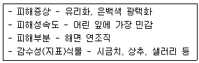
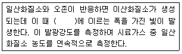
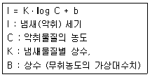
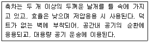
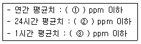

대기환경산업기사 (2010-09-05 기출문제)
1과목: 대기오염개론
1. 바람에 작용하는 여러 힘 중 전향인자를 나타낸 식으로 옳은 것은? (단, Ω : 지구 자전 각속도, Φ : 물체의 위도)
- 2ㆍΩㆍsinΦ
- 2ㆍΩㆍcosΦ
- Ω2ㆍsinΦ
- Ω2ㆍcosΦ
(정답률: 89%)

2. 대기 중에 존재하는 기체상의 질소산화물 중 대류권에서는 온실가스로 알려져 있고 일명 웃음기체 라고도 하며, 성층권에서는 오존층 파괴물질로도 알려져 있는 것은?
- N2O
- NO2
- NO3
- N2O5
(정답률: 95%)
3. 냄새물질의 특성에 관한 설명으로 옳지 않은 것은?
- 분자량이 큰 물질은 냄새강도가 분자량에 반비례해서 단계적으로 약해지는 경향이 있다.
- 불포화도가 높으면 냄새가 보다 강하게 난다.
- 분자내 수산기의 수는 8-13개 일 때 가장 냄새강도가 강하다.
- 에스테르 화합물은 구성하는 산이나 알코올류보다 방향이 우세하다.
(정답률: 79%)
4. 다음 대기분산모델 중 적용 모델식이 바람장모델에 해당하는 것은?
- MM5
- AUSPLUME
- ISCLT
- CTDMPLUS
(정답률: 80%)
5. 다음 대기오염물질 중 아래 표와 같이 식물에 대한 특성을 나타내는 것으로 가장 적합한 것은?

- SO2
- HCl
- PAN
- NOx
(정답률: 64%)
6. 다음 온실가스 중 동일한 부피에서 가장 무거운 물질은?
- CO2
- CH4
- N2O
- O3
(정답률: 90%)
7. 대기분산모델에 관한 다음 설명 중 거리가 먼 것은?
- CMAQ( Complex Multiscale Air Quality Modeling System)는 가우시안모델로 일본에서 개발한 모델이다.
- RAMS (Regional Atmospheric Model System)는 바람장모델로 바람장과 오염물질 분산을 동시에 계산한다.
- ADMS (Atmospheric Dispersion Model System)는 도시지역에서 오염물질의 이동을 계산하는 것으로 영국에서 많이 사용했던 모델이다.
- AUSPLUME (Australian Plume Model)는 미국의 ISCST와 ISCLT모델을 개조하여 만든 모델로 호주에서 주로 사용되었다.
(정답률: 75%)
8. 화학공업, 유리공업, 피혁상, 과수원의 농약 분무 작업 등이 관련 배출업종이며, 인체에 피부암, 비중격 천공, 각화증 등을 유발하는 물질로 가장 적절한 것은?
- 비소
- 납
- 구리
- 카드뮴
(정답률: 65%)
9. 다음 중 광화학 반응에 의해 생성된 2차 오염물질로만 연결된 것은?
- SO3 - NH3
- H2O2 - O3
- NO2 - HCl
- NaCl - SO3
(정답률: 91%)
10. 다음 특정물질 중 오존파괴지수가 가장 낮은 것은?
- CFC - 13
- CFC - 114
- CFC - 115
- CFC - 11
(정답률: 81%)
11. 대기오염물질이 인체에 미치는 영향으로 가장 거리가 먼 것은?
- 아크릴 아마이드는 지용성으로 인체내 호흡기를 통해 주로 흡수되며, 이 물질에 폭로된 산업현장 근로자들은 비교적 긴 기간(10년 정도)후에 중독증상을 보인다.
- 삼염화에틸렌은 중추신경계를 억제하는데 간과 신장에 미치는 독성은 사염화탄소에 비해 현저하게 낮다.
- 이황화탄소는 대부분 상기도를 통해 체내 흡수되며, 중추신경계에 대한 특징적인 독성작용으로는 심한 급성 혹은 아급성 뇌병증을 유발한다.
- 염화비닐에 장기간 폭로되면 간조직 세포의 증식과 섬유화가 일어나고 문맥압이 상승하여 식도 정맥류 및 식도 출혈을 일으킬 수 있다.
(정답률: 58%)
12. 교통밀도가 6000대/hr, 차량평균속도가 95km/hr 인 고속도로 상에서 차량 1대의 평균 탄화수소 방출량이 0.2×10-2 g/secㆍ대 일 때, 고속도로에서 방출되는 총탄화수소의 량(g/sㆍm)은?
- 1.26
- 1.26 × 10-1
- 1.26 × 10-2
- 1.26 × 10-4
(정답률: 63%)
13. 어떤 대기오염 배출원에서 이산화질소를 0.2%(V/V) 포함한 물질이 30m3/sec로 배출되고 있다. 1년 동안 이 지역에서 배출되는 이산화질소의 배출량은 얼마인가?(단, 표준상태를 기준으로 하며, 배출원은 연속가동 된다고 한다.)
- 약 3900t
- 약 4400t
- 약 5500t
- 약 5700t
(정답률: 75%)
14. 다음 중 황산화물(SOx)이 인체에 미치는 영향으로 가장 거리가 먼 것은?
- SO2가 인체에 미치는 피해는 농도와 노출시간이 문제가 되며, 주로 호흡기 계통의 질환을 일으킨다.
- 적당히 노출시는 상부호흡기에 영향을 미치며, 단독흡입보다 먼지나 액적 등과 동시에 흡입시 황산미스트가 되어 SO2보다 독성이 10배 정도로 증가한다.
- SO3는 호흡기 계통에서 분비되는 점막에 흡착되어, H2SO4가 된 후, 조직에 작용하여 궤양을 일으킨다.
- 흡입된 SO2의 95% 이상은 하기도에서 흡수되며, 잔여량이 비강 또는 인후에 흡수된다.
(정답률: 55%)
15. 굴뚝에서 배출된 연기형태 중 대기가 불안정하여 난류가 심할 때 발생하고, 오염물질의 연직 확산이 커서 굴뚝 부근의 지표면에서는 국지적, 일시적인 고농도현상이 발생되기도 하며, 일반적으로 지표면이 가열되고 바람이 약한 맑은 날, 낮에 주로 일어나는 형태는?
- Fumigation
- Lofting
- Coning
- Looping
(정답률: 77%)
16. 대기오염물질이 인체에 미치는 영향으로 가장 거리가 먼 것은?
- 일산화질소의 유독성은 이산화질소의 독성보다 약 5-7배 정도 강하다.
- 3, 4 - 벤조피렌 같은 탄화수소 화합물은 발암성 물질로 알려져 있다.
- SO2는 고농도일수록 비강 또는 인후에서 많이 흡수되며 저농도인 경우에는 극지 저율로 흡수된다.
- 광화학 반응으로 생성된 옥시던트(Oxidant)는 눈을 자극한다.
(정답률: 66%)
17. 층류의 항력을 구할 대 입경(dp)에 따른 커닝험계수(Cf)의 적용으로 옳은 것은?
- dp ＜ 3㎛ 인 경우 Cf = 1
- dp ＞ 3㎛ 인 경우 Cf = 1
- 1㎛ ＜ dp ＜ 3㎛ 인 경우 Cf = 1
- dp = 1㎛ 인 경우 Cf = 1
(정답률: 75%)
18. 광화학 스모그의 형성과정에서 하루 중 농도의 최대치가 나타나는 시간대가 일반적으로 빠른 순서대로 나열된 것은?
- NO ＞ NO2 ＞ O3
- NO2 ＞ NO ＞ O3
- O3 ＞ NO ＞ NO2
- NO ＞ O3 ＞ NO2
(정답률: 74%)
19. 다음 국제협약 중 질소산화물 배출량 또는 국가간 이동량의 최저 30% 삭감에 관한 국가간 장거리 이동 대기오염조약의 의정서(협약)에 해당하는 것은?
- 몬트리올 의정서
- 런던협약
- 오솔로 협약
- 소피아 의정서
(정답률: 89%)
20. 다음 중 수용모델의 특징에 해당하는 것은?
- 지형 및 오염원의 조업조건에 영향을 받는다.
- 2차 오염원의 확인이 가능하다.
- 오염원의 조업 및 운영상태에 대한 정보없이도 사용 가능하다.
- 점ㆍ선ㆍ면ㆍ오염원의 영향을 받을 수 있다.
(정답률: 68%)
2과목: 대기오염 공정시험 기준(방법)
21. 다음 중 일반적으로 사용하는 이온크로마토그래피의 구성을 순서대로 옳게 나열한 것은?
- 용리액조 → 시료주입장치 → 송액펌프 → 써프렛서 → 분리관 → 검출기 → 기록계
- 송액펌프 → 용리액조 → 시료주입장치 → 분리관 → 검출기 → 써프렛서 → 기록계
- 용리액조 → 송액펌프 → 분리관 → 시료주입장치 → 써프렛서 → 검출기 → 기록계
- 용리액조 → 송액펌프 → 시료주입장치 → 분리관 → 써프렛서 → 검출기 → 기록계
(정답률: 78%)
22. 다음 중 클로로폼으로 추출한 착염을 타타르산 용액으로 역추출하고, 수산화나트륨 ㆍ시안화칼륨 용액 속에서 디티존에 반응시켜 클로로폼으로 추출한 후 그 흡광도를 파장 520nm에서 측정하는 오염물질은?
- 카드뮴
- 구리
- 바나듐
- 수은
(정답률: 56%)
23. 다음은 굴뚝배출가스 내의 질소산화물을 연속적으로 자동측정하는 방법 중 화학발광분석계의 원리에 관한 설명이다. ( ) 안에 알맞은 것은?

- 250 - 310 nm
- 320 - 455 nm
- 460 - 545 nm
- 590 - 875 nm
(정답률: 41%)
24. 굴뚝연속자동측정기 설치방법 중 도관 부착방법으로 가장 거리가 먼 것은?
- 냉각 도관 부분에는 반드시 기체ㆍ액체 분리관과 그 아래쪽에 응축수 트랩을 연결한다.
- 응축수의 배출에 쓰는 펌프는 충분히 내구성이 있는 것
- 냉각도관은 될 수 있는 대로 수평으로 연결한다.
- 기체ㆍ액체 분리관은 도관의 부착위치 중 가장 낮은 부분 또는 최저 온도의 부분에 부착하여 응축수를 급속히 냉각시키고 배관계의 밖으로 빨리 배출시킨다.
(정답률: 82%)
25. 굴뚝 배출가스 중 암모니아의 중화적정법으로 옳은 것은?
- 시료가스를 수산화나트륨 용액에 흡수시킨 후 황산으로 적정한다.
- 시료가스를 수산화나트륨 용액에 흡수시킨 후 염산으로 적정한다.
- 시료가스를 붕산용액에 흡수시킨 후 염산으로 적정한다.
- 시료가스를 붕산용액에 흡수시킨 후 황산으로 적정한다.
(정답률: 73%)
26. 분석대상가스 및 공존가스가 비소인 경우 사용되는 채취관, 도관의 재질로 가장 거리가 먼 것은?
- 불소수지
- 석영
- 염화비닐수지
- 보통강철
(정답률: 65%)
27. 다음 중 크로모트로핀산 (Chromotropic Acid) 법은 어떤 오염물질 분석방법인가?
- 브롬 및 브롬화 수소
- 사염화탄소 및 클로로포름
- 알데히드 및 케톤화합물
- 벤젠
(정답률: 76%)
28. 굴뚝 배출가스 중 총 탄화수소 분석에 사용되는 용어 설명으로 적합한 것은?
- 교정가스 : 미지농도를 희석가스로 사용한다.
- 영점편차 : 영점가스 주입전에 측정기가 반응하는 정도의 차이로 운전기간 동안에는 지속적으로 교정상태여야 한다.
- 스팬값 : 측정기의 측정범위는 배출허용기준 이상으로 하며 보통 기준의 3 - 5 배를 적용한다.
- 반응시간 : 오염물질농도의 단계변화에 따라 최종값의 90%에 도달하는 시간으로 한다.
(정답률: 62%)
29. 대기오염공정시험방법에 사용되는 용어 중 “물질을 취급 또는 보관하는 동안에 기체 또는 미생물이 침입하지 않도록 내용물을 보호하는 용기”를 의미하는 것은?
- 밀폐용기
- 기밀용기
- 밀봉용기
- 차광용기
(정답률: 80%)
30. 굴뚝 배출가스 중 불소화합물 분석방법으로 옳지 않은 것은?
- 란탄 - 알리자린 콤플렉숀법은 시료가스 중의 미량의 알루미늄(III), 철(II), 구리(II) 등의 중금속 이온이나 인산이온 등이 공존하면 영향을 미치므로 증류에 의해 분리한 후 정량한다.
- 란탄 - 알리자린 콤플렉숀법은 증류온도를 145±5℃, 유출속도를 3-5mL/min으로 조절하고, 받는 그릇의 액량이 약 220 mL가 될 때까지 증류를 계속한다.
- 용량법은 pH를 조절하고 네오트린을 가한 다음 수산화나트륨 용액으로 적정한다.
- 란탄-알리자린 콤플렉손법에서의 정량범위로는 HF로서 0.9 - 1200ppm (0.8 -1000mg/Sm3)이다.
(정답률: 67%)
31. 다음 중 굴뚝 배출가스 내의 염화비닐 시험방법으로 옳은 것은?
- 엠브레인 필터법
- 고체흡착 용매추출법
- 몰린형광광도법
- 흑연로원자흡광광도법
(정답률: 53%)
32. 굴뚝배출가스 중의 수분을 측정한 결과, 건조배출가스 1Sm3 당 40g이었다면 건조배출 가스에 대한 수분의 용량비는?
- 2.6%
- 3.8%
- 5.0%
- 6.3%
(정답률: 35%)
33. 가스크로마토그래프법을 이용하여 분석실험을 할 때, 분리관의 이론단수가 1600이고, 보유시간이 10분인 피이크의 좌우 변곡점에서 접선이 자르는 바탕선의 길이(mm)는? (단, 기록지 속도는 10mm/분 이고, 이론단수는 모든 성분에 대하여 같다)
- 6
- 10
- 18
- 24
(정답률: 70%)
34. 굴뚝 배출가스 중의 유속을 피토우관으로 측정했을 때 평균유속이 14.5m/sec였다. 이 때의 동압은? (단, 피토우관 계수는 1.0 이며, 굴뚝내의 습한 배출가스의 밀도는 1.2 kg/m3)
- 0.95 mmHg
- 5.6 mmHg
- 12.9 mmHg
- 22.1 mmHg
(정답률: 35%)
35. 환경대기 중의 시료채취를 위한 하이볼륨에어샘플에어샘플러법의 장치구성에 관한 설명으로 옳지 않은 것은?
- 공기흡인부는 직권정류자모터에 2단 원심터빈형 송풍기가 직접 연결된 것으로 무부하일 때의 흡인유량이 약 2m3/분이고 24시간이상 연속측정 할 수 있는 것이어야 한다.
- 금속망(Net)의 크기는 사용하는 여과지의 크기와 일치하여야 하며, 공기가 통하지 않는 부분에는 불소수지제 테이프를 감는다.
- 유량측정부의 지시유량계는 상대유량단위로서 1.0~ 2.0m3/분의 범위를 0.⑤m3/분까지 측정할 수 있도록 눈금이 새겨진 것을 사용한다.
- 입자상 물질의 포집에 사용하는 여과지는 1㎛되는 입자를 95%이상 포집할 수 있는 것이어야 한다.
(정답률: 73%)
36. 휘발성 유기화합물질(VOC) 누출확인방법에 사용되는 측정기기의 성능기준 및 성능평가 요구사항으로 옳지 않은 것은?
- 측정될 개별 화합물에 대한 기기의 반응인자( Response Factor)는 30보다 작아야 한다.
- 기기의 응답시간은 30초보다 작거나 같아야 한다.
- 교정 정밀도는 교정용 가스값의 10%보다 작거나 같아야 한다.
- 교정 정밀도 및 응답시간 테스는 기기를 사용하기 전에 하여야 한다.
(정답률: 49%)
37. 굴뚝 배출가스 중 먼지를 반자동식 채취기에 의해 측정하고자 할 때 채취장치의 구성에 관한 설명으로 옳지 않은 것은?
- 흡인노즐 내경은 4mm 이상으로 한다.
- 흡인관은 수분응축 방지를 위한 가열기를 갖춘 것이어야 한다.
- S형 피토우관을 사용한다.
- 차압게이지로 경사마노미터는 사용할 수 없다.
(정답률: 62%)
38. 다음 중 흡광광도분석 시 흡광도 눈금보정에 사용되는 것은?
- 염화나트륨
- 음이온계면활성제
- 시안화나트륨
- 중크롬산칼륨
(정답률: 60%)
39. 소각시설에서 배출되는 입자상 및 가스상 수은을 디티존법으로 분석할 때의 측정파장은?
- 490nm
- 358nm
- 325nm
- 287nm
(정답률: 63%)
40. 다음 중 가스크로마토그래프법에서 사용되는 용어가 아닌 것은?
- Tailing Peak, Micro Syringe
- Pen Response Time, Chart Speed
- Stationary Liquid, Dead Volume
- Photo Multiplier Tube, Photo Diode Array
(정답률: 62%)
3과목: 대기오염방지기술
41. 여과집진장치에 관한 설명으로 옳지 않은 것은?
- 여과재는 재질 보전을 위해서 최고사용온도를 넘지 않도록 주의해야 하며, 특히 고온가스를 냉각시킬 때에는 산노점 이상으로 유지해야 한다.
- 수분이나 여과속도에 대한 적응성은 낮은 편이다.
- 간헐식인 경우 먼지의 재비산이 적고 높은 집진율을 얻을 수 있다.
- 여과자루의 길이/직경(L/D) ≒ 50 이상으로 설계하고, 여과자루간의 최소간격은 20cm 이상이 되어야 한다.
(정답률: 63%)
42. 에탄올 1kg을 완전연소 시킬 때 필요한 이론공기량(Sm3)은?
- 6.96 Sm3
- 4.30 Sm3
- 2.92 Sm3
- 1.46 Sm3
(정답률: 51%)
43. 불화규소 제거를 위한 세정탑의 형식으로 가장 거리가 먼 것은?
- Venturi Scrubber
- Jet Scrubber
- Packed Tower
- Spray Tower
(정답률: 63%)
44. 후드의 형식 및 설치 위치의 결정에 관한 설명 중 옳지 않은 것은?
- 후드 개구의 바깥주변에 플랜지를 부착하면 후드 뒤쪽의 공기흡입을 유도할 수 있고, 그 결과 포착속도를 높일 수 있다.
- 가능한 한 발생원을 모두 포위할 수 있는 포위식 또는 부스식을 선택한다.
- 작업 또는 공정상 발생원을 포위할 수 없는 경우 외부식을 선택한다.
- 오염물질의 발생상태를 조사한 결과 오염기류가 공정 또는 작업자체에 의해 일정방향으로 발생하고 있을 경우 레시버식을 선택한다.
(정답률: 71%)
45. A굴뚝 배출가스 중 염소농도를 측정하였더니 100mL/Sm3이었다. 이 때 염소농도를 50mg/Sm3로 저하시키기 위하여 제거해야 할 염소농도는 약 몇 mL/Sm3인가?
- 15 mL/Sm3
- 50 mL/Sm3
- 84 mL/Sm3
- 92 mL/Sm3
(정답률: 40%)
46. . 악취의 세기와 악취물질의 농도사이에는 다음과 같은 관계식이 성립한다. 이와 관련된 법칙은?

- Kirchhoff 법칙
- Webber-Fechner 법칙
- Stefan-Bolzmann 법칙
- Albedo 법칙
(정답률: 73%)
47. 연소조절에 의한 질소산화물(NOx) 저감대책으로 거리가 먼 것은?
- 과잉공기량을 줄인다.
- 배출가스를 재순환시킨다.
- 연소용 공기의 예열온도를 높인다.
- 2단계 연소법을 사용한다.
(정답률: 71%)
48. 액화프로판 660kg을 기화시켜 9.9Sm3/h로 연소시킨다면 약 몇 시간 사용할 수 있는가? (단, 표준상태 기준)
- 34시간
- 42시간
- 46시간
- 49시간
(정답률: 47%)
49. 다음 중 석회석 주입에 의한 황산화물 제거방법으로 옳지 않은 것은?
- 대형보일러에 주로 사용되며, 배기가스의 온도가 떨어지는 단점이 있다.
- 연소로 내에서 아주 짧은 접촉시간과 아황산가스가 석회분말의 표면안으로 침투되기 어려우므로 아황산가스 제거효율이 낮은 편이다.
- 석회석 값이 저렴하므로 재생하여 쓸 필요가 없고 석회석의 분쇄와 주입에 필요한 장비외에 별도의 부대시설이 크게 필요 없다.
- 배기가스 중 재와 석회석이 반응하여 연소로 내에 달라붙어 압력손실을 증가시키고, 열전달을 낮춘다.
(정답률: 71%)
50. 90° 곡관의 반경비가 2.25일 때 압력손실 계수는 0.26이다. 속도압이 30mmH2O라면 곡관의 압력손실은?
- 약 2 mmH2O
- 약 5 mmH2O
- 약 8 mmH2O
- 약 12 mmH2O
(정답률: 58%)
51. 다음 설명하는 축류송풍기의 유형은?

- 후향날개형
- 방사경사형
- 프로펠러형
- 고정날개축류형
(정답률: 60%)
52. 습식세정장치의 특성으로 가장 거리가 먼 것은?
- 부식성 가스와 먼지를 중화시킬 수 있다.
- 가연성, 폭발성 먼지를 처리할 수 있다.
- 단일장치에서 가스흡수와 먼지포집이 동시에 가능하다.
- 가시적 연기를 피하기 위해 별도의 재가열 불필요하고, 집진된 먼지의 회수가 용이하다.
(정답률: 66%)
53. 에멀젼연료에 대한 설명으로 가장 거리가 먼 것은?
- 물의 증발잠열에 의해 화염온도를 하락시켜 주로 SOx를 억제시킨다.
- 에멀젼이란 어느 액체내에 다른 액체의 작은 물방울이 균일하게 분산하고 있는 상태를 의미한다.
- 분무연료의 미립자화가 촉진되기 때문에 저산소 연소시에도 먼지발생을 억제할 수있다.
- 열효율이 낮고 장기 운전시 부식의 문제가 있다.
(정답률: 44%)
54. 싸이클론의 특징으로 가장 거리가 먼 것은?
- 설치비와 유지비가 많이 요구되지 않는 편이다.
- 먼지량이 많아도 처리가 가능하다.
- 미세입자에 대한 집진효율이 낮다.
- 압력손실 (10-30mmH2O)이 낮아 동력소비량이 적은 편이다.
(정답률: 67%)
55. 발생원으로부터 집진장치를 포함한 송풍기까지의 전압력손실이 240mmH2O일 때 처리가스량이 36000 m3/hr 였다면 이 때 송풍기의 소요동력은? (단, 송풍기의 효율은 70%이고, 여유율은 1.4 이다.)
- 약 35 kW
- 약 40 kW
- 약 47 kW
- 약 51 kW
(정답률: 56%)
56. 중력집진장치의 효율향상 조건으로 가장 거리가 먼 것은?
- 침강실 내의 처리가스 속도를 작게 한다.
- 침강실의 Blow down효과를 이용하여 난류현상을 억제한다.
- 침강실의 높이는 낮게 하고, 길이는 길게 한다.
- 침강실의 입구폭을 크게 한다.
(정답률: 47%)
57. 직경 10cm, 길이가 1m 인 원통형 전기집진장치에서 가스유속이 2m/sec 이고, 먼지입자의 분리속도가 25cm/sec라면 집진율은 얼마인가?
- 96.26%
- 97.82%
- 98.12%
- 99.33%
(정답률: 58%)
58. 다음 중 석유계 연료의 탄소수소비(C/H)가 높은 것부터 차례로 옳게 나열한 것은?
- 중유 ＞ 경유 ＞ 등유 ＞ 휘발유
- 중유 ＞ 등유 ＞ 경유 ＞ 휘발유
- 휘발유 ＞ 등유 ＞ 경유 ＞ 중유
- 휘발유 ＞ 경유 ＞ 등유 ＞ 중유
(정답률: 72%)
59. A여과집진장치에서 처음에는 99.5%의 효율로 먼지를 제거 하였는데 나중에 성능이 떨어져 96% 밖에 먼지를 제거하지 못한다고 하면 나중 먼지의 배출농도는 처음 먼지의 배출농도에 비해 몇 배가 되는가? (단, 유입농도는 변화없으며, 기타조건은 고려하지 않는다.)
- 2배
- 4배
- 6배
- 8배
(정답률: 57%)
60. 다음 중 유해가스 처리시 흡수제로 물을 사용하는 경우 물질이동량이 액상측 저항에 의하여 지배되는 가스는?
- CO
- NH3
- SO2
- HF
(정답률: 39%)
4과목: 대기환경 관계 법규
61. 대기환경보전법규상 측정기기의 운영ㆍ관릭준 중 굴뚝배출가스 온도측정기를 교체하는 경우에는 국가표준기본법에 따라 교정을 받아야 하며, 그 기록을 몇 년 이상 보관하여야 하는가?
- 6개월 이상
- 1년 이상
- 2년 이상
- 3년 이상
(정답률: 70%)
62. 대기환경보전법령상 황함유기준을 초과하여 해당 유류의 회수처리명령을 받는 자가 환경부장관 또는 시ㆍ도지사에게 이행환료보고서를 제출할 때 구체적으로 밝혀야 하는 사항으로 가장 거리가 먼 것은?
- 해당 유류의 공급기간 또는 사용기간과 공급량 또는 사용량
- 해당 유류의 회수처리량, 회수처리방법 및 회수처리기간
- 유류 제조회사가 실험한 황함유량 검사 성적서
- 저황유의 공급 또는 사용을 증명할 수 있는 자료 등에 관한 사항
(정답률: 77%)
63. 대기환경보전법상 대기오염물질 배출사업자에게 배출부과금을 부과할 때 고려해야 하는 사항으로 가장 거리가 먼 것은? (단, 그 밖의 사항 등은 고려하지 않는다. )
- 오염물질 배출기간.
- 오염물질 배출량
- 배출되는 오염물질의 유해여부
- 배출허용기준 초과여부
(정답률: 69%)
64. 대기환경보전법규상 환경부장관이 총량규제구역의 사업장에서 배출되는 대기오염물질을 총량으로 규제하려는 경우 고시하여야 하는 사항으로 가장 거리가 먼것은? (단, 그 밖에 총량규제구역의 대기관리를 위하여 필요한 사항 등은 제외)
- 유해 대기오염물질의 배출계획
- 대기오염물질의 저감계획
- 총량규제구역
- 총량규제 대기오염물질
(정답률: 60%)
65. 대기환경보전법상 장관에 따른 자동차환경협회의 업무와 가장 거리가 먼 것은? (단, 그 밖에 사항 등은 고려하지 않는다)
- 운행차 저공해화 기술개발 및 배출가스저감장치의 보급
- 자동차 배출가스 저감사업의 지원과 사후관리에 관한사항
- 운행차 배출가스 검사와 정비기술의 연구ㆍ개발사업
- TMS 대기질 모니터링 및 대기질 정화사업
(정답률: 60%)
66. 대기환경보전법규상 위임업무 보고사항 중 “환경오염사고 발생 및 조치사항”의 보고횟수 기준은?
- 연1회
- 연2회
- 연4회
- 수시
(정답률: 72%)
67. 대기환경보전법규상 배출시설과 방지시설의 정상적인 운영ㆍ관리를 위한 환경기술인의 준수사항으로 옳지 않은 것은?
- 배출시설 및 방지시설을 정상가동하여 대기오염물질 등의 배출이 배출허용기준에 맞도록 할 것
- 배출시설 및 방지시설의 운영에 관한 업무일지를 사실에 기초하여 작성할 것
- 배출시설에서 생산된 제품의 품질과 생산량을 정확히 기록할 것
- 자가측정은 정확히 할 것
(정답률: 69%)
68. 대기환경보전법령상 연료의 황함유량이 1.0% 이하인 경우 기본부과금의 농도별 부과계수로 옳은 것은? (단, 연료를 연소하여 황산화물을 배출하는 시설임(황산화물의 배출량을 줄이기 위하여 방지시설을 설치한 경우와 생산공정상 황산화물의 배출량이 줄어든다고 인정하는 경우는 제외))
- 0.2
- 0.4
- 1.0
- 1.2
(정답률: 62%)
69. 대기환경보전법상 관계공무원의 출입ㆍ검사를 거부, 방해, 또는 기피한 자에 대한 벌칙기준은?
- 1년 이하의 징역 또는 500만원 이하의 벌금
- 300만원 이하의 벌금
- 200만원 이하의 벌금
- 100만원 이하의 벌금
(정답률: 63%)
70. 다중이용시설 등의 실내공기질 관리법규상 실내공기오염물질에 해당하지 않는 것은?
- 석면
- 이산화질소(NO2)
- 폼알데하이드(HCHO)
- 일산화질소(NO)
(정답률: 47%)
71. 다중이용시설 등의 실내공기질 관리법규상 항만시설 중 대합실에서의 VOC 실내공기질 권고기준(㎍/m3)으로 옳은 것은?
- 400 이하
- 500 이하
- 800 이하
- 1000 이하
(정답률: 56%)
72. 대기환경보전법규상 환경기술인의 신규교육기준에 관한 설명으로 옳은 것은? (단, 정보통신매체를 이용하여 원격교육의 경우는 제외)
- 환경기술인으로 임명된 날부터 30일 이내
- 환경기술인으로 임명된 날부터 60일 이내
- 환경기술인으로 임명된 날부터 6월 이내에 1회
- 환경기술인으로 임명된 날부터 1년 이내에 1회
(정답률: 62%)
73. 환경정책기본법령상 이산화질소(NO2)의 대기환경기준으로 옳은 것은?

- ① 0.02, ② 0.⑤, ③ 0.15
- ① 0.03, ② 0.06, ③ 0.10
- ① 0.06, ② 0.10, ③ 0.15
- ① 0.10, ② 0.12, ③ 0.30
(정답률: 75%)
74. 대기환경보전법령상 배출허용기준초과와 관련하여 개선명령을 받은 사업자는 그 명령을 받는 날부터 며칠 이내에 개선계획서를 제출하여야 하는가?
- 7일 이내
- 10일 이내
- 15일 이내
- 30일 이내
(정답률: 65%)
75. 환경정책기본법령상 각 항목에 대한 대기한경기준으로 옳지 않은 것은? (단, 연간평균치 기준)
- 오존 : 0.1 ppm 이하
- 벤젠 : 5 ㎍/m3 이하
- 납 : 0.5 ㎍/m3 이하
- 미세먼지(PM-10) : 50 ㎍/m3 이하
(정답률: 50%)
76. 대기환경보전법규상 전기만을 동력으로 사용하는 자동차의 1회 충전주행거리가 160km 이상인 자동차는 제 몇 종 자동차에 해당하는가?
- 제 1 종
- 제 2 종
- 제 3 종
- 제 4 종
(정답률: 65%)
77. 대기환경보전법규상 제1차 금속 제조시설 중 금속의 용융ㆍ용해 또는 열처리시설에서의 대기오염물질 배출시설 기준으로 옳지 않은 것은?
- 시간당 300킬로와트 이상인 전기아크로 (유도로를 포함한다.)
- 노상면적이 4.5제곱미터 이상인 반사로
- 1회 주입 연료 및 원료량의 합계가 0.5톤 이상의 옹선로
- 1회 주입 원료량이 0.3톤 이상이거나 연료사용량이 시간당 25킬로그램 이상의 도가니로
(정답률: 57%)
78. 대기환경보전법상 용어의 뜻으로 옳지 않은 것은?
- 검댕 : 연소할 때에 생기는 유리탄소가 응결하여 입자의 지름이 1미크론 이상이 되는 입자상 물질
- 가스 : 물질이 파쇄ㆍ선별ㆍ퇴적ㆍ이적될 때 발생하거나 화학적 성질에 의하여 발생하는 기체상 물질
- 먼지 : 대기 중에 떠다니거나 흩날려 내려오는 입자상 물질
- 매연 : 연소할 때에 생기는 유리탄소가 주가 되는 미세한 입자상 물질
(정답률: 52%)
79. 대기환경보전법규상 자동차연료 제조기준 중 휘발유에서 규정하고 있는 제조기준항목으로 옳지 않은 것은?
- 방향족화합물 함량(부피%)
- 황함량(ppm)
- 윤활성(㎛)
- 증기압(kPa, 37.8℃)
(정답률: 73%)
80. 대기환경보전법규상 자동차연료형 첨가제의 종류가 해당하지 않는 것은?
- 세척제
- 옥탄가억제제
- 다목적첨가제
- 세탄가향상제
(정답률: 57%)